Danse
Chaque matin, 30 min
Des moments de légèreté et de spontanéité, pour bouger librement et renouer avec le plaisir d'habiter son corps.
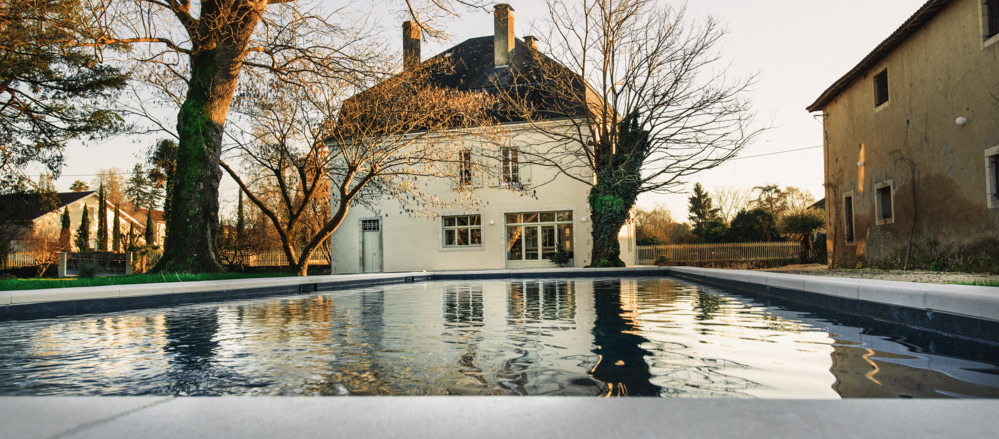
À la maison Yaya
Prochaine retraite · Ralentir · 24 – 30 juillet 2027
Une semaine pour lever le pied, apaiser son système nerveux et retrouver la joie, avec Isabelle.
La prochaine retraite · Juillet 2027
Et si nous prenions le temps de ralentir pour mieux savourer la vie ?
Isabelle vous propose un séjour d'une semaine pour lever le pied, retrouver votre rythme naturel et renouer avec le plaisir d'habiter pleinement votre corps. Ces pratiques permettent de relâcher les tensions et d'apaiser le système nerveux : c'est un retour à soi, une connexion avec le vivant, son corps, la nature et le groupe.
Ralentir ne signifie pas s'arrêter : vous apprendrez à écouter votre énergie, à respecter vos besoins et à retrouver le goût du mouvement. Durant ce séjour « Listen to you », vous vivrez des moments de légèreté, de spontanéité et de plaisirs partagés.
Ralentir ne signifie pas s'arrêter.
Le lieu
Une maison de famille pour ralentir
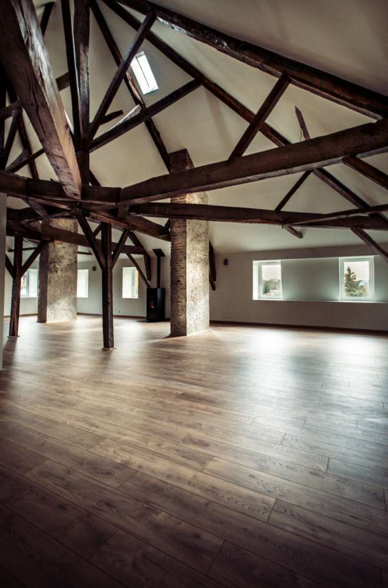
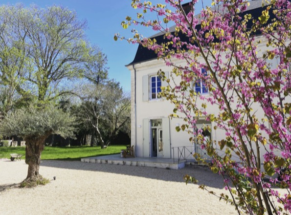
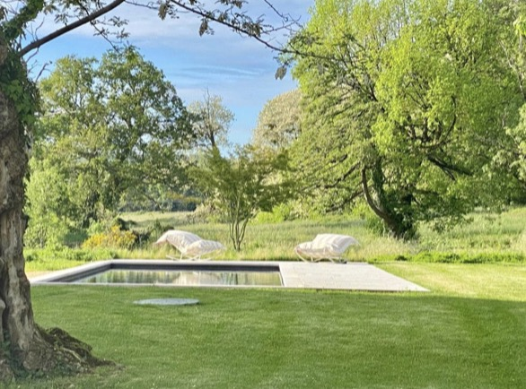
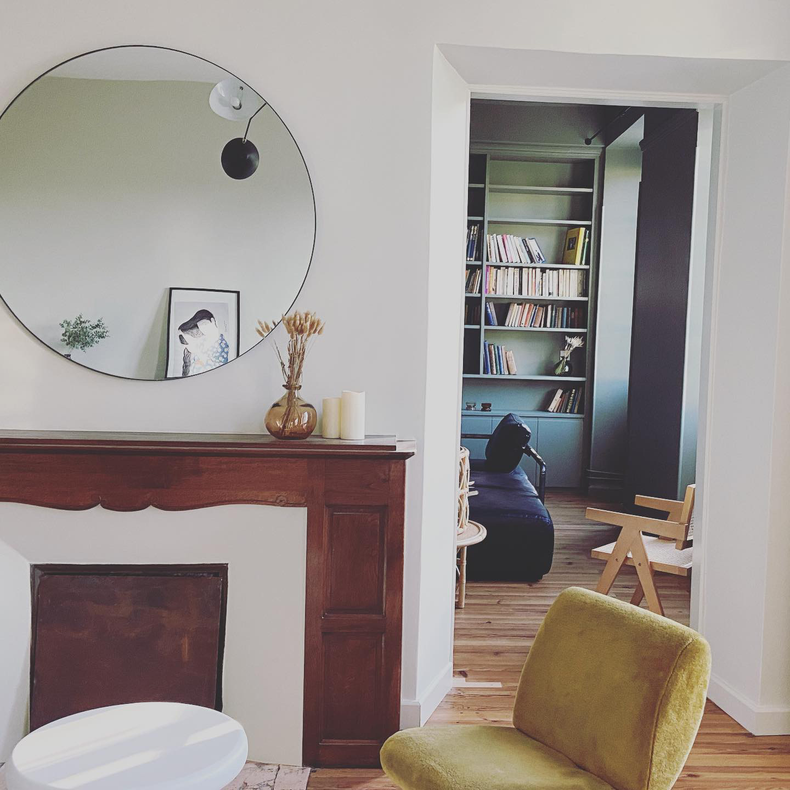
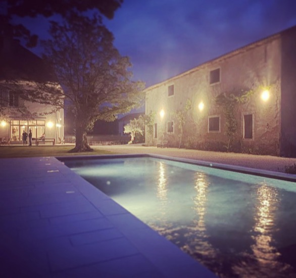
Au Pays basque
Une grande salle de pratique sous la charpente, un jardin arboré avec piscine, des salons lumineux aux parquets anciens.
Tout invite à ralentir : pratiquer au calme, lire au jardin, se baigner, partager un repas sur la terrasse.
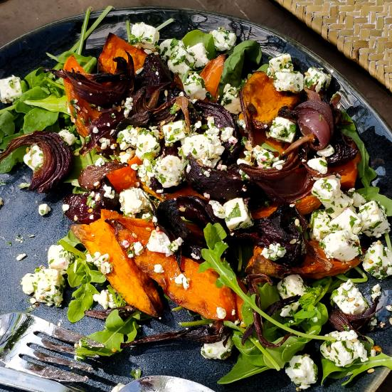
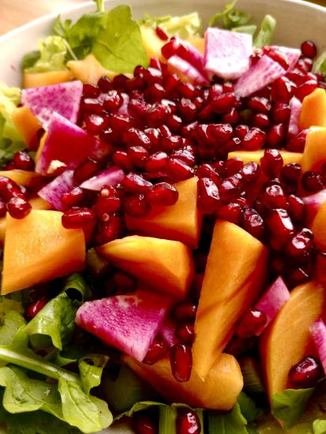
La table
Une cuisine vivante, consciente et gourmande : Elena, de Noesis Culinaria, prépare sur place des repas végétariens et véganes, bios, locaux et de saison.
Inspirée de ses racines andalouses et de la cuisine méditerranéenne, elle adapte ses menus au rythme de la retraite et aux besoins de chacun, avec une attention particulière portée au gluten et au lactose. Des repas savoureux, digestes et réconfortants, qui favorisent l'ancrage et la présence nécessaires à la pratique.
Brunch végétarien à 11 h 30 · dîner à 20 h 15
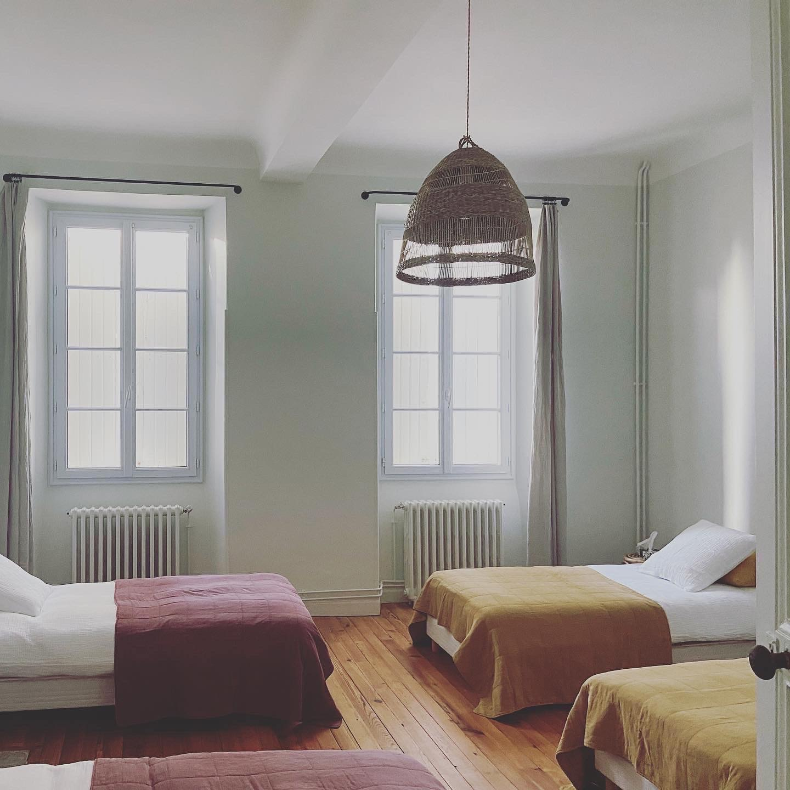
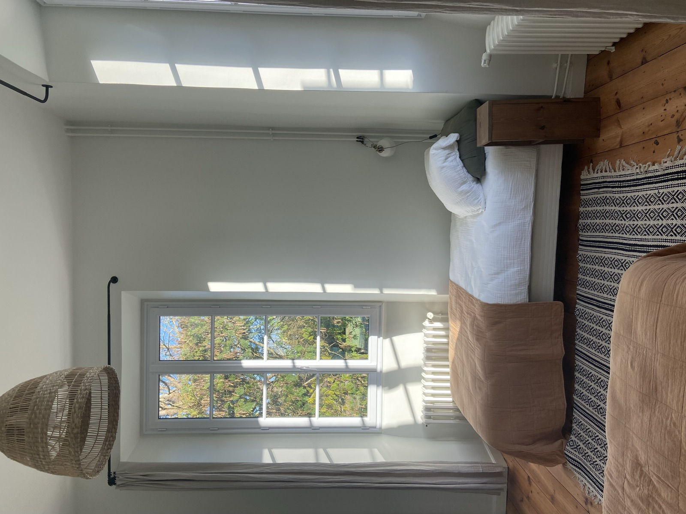
L'hébergement
Des chambres partagées de deux ou quatre lits, chacune avec sa salle de bain privative, aux murs clairs et parquets anciens.
1 800 € par personne en chambre de deux, 1 450 € en chambre de quatre. Voir les chambres et les tarifs
Chaque matin, 30 min
Des moments de légèreté et de spontanéité, pour bouger librement et renouer avec le plaisir d'habiter son corps.

Chaque soir, 2 h
Des postures, de la respiration et de la relaxation pour relâcher les tensions et apaiser le système nerveux.

Chaque matin, 1 h 30
Retrouver le goût du mouvement, développer la conscience du corps et le ressenti, à son rythme.
Le programme
Danse et Pilates le matin, temps libre l'après-midi, Yoga le soir
Voir le programme détaillé (PDF)

Votre guide
Fondatrice de Listen, professeure de Pilates et de Yoga
Isabelle guide chaque participant vers plus de conscience du corps et de ressenti. Inspirée de la théorie polyvagale, elle vous invite à mieux connaître vos états intérieurs et à découvrir des ressources pour retrouver davantage de calme, de disponibilité et d'équilibre.
Tarifs
Par personne, pour la semaine, selon la chambre
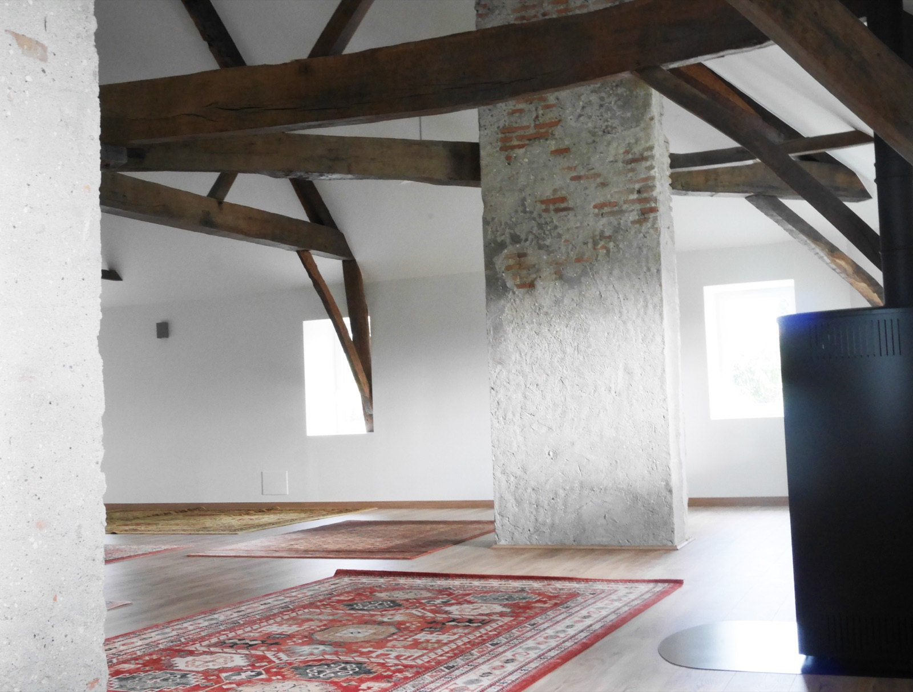
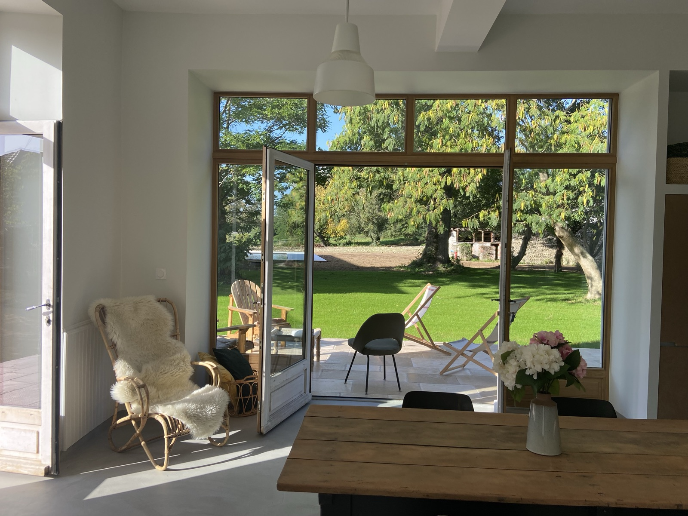
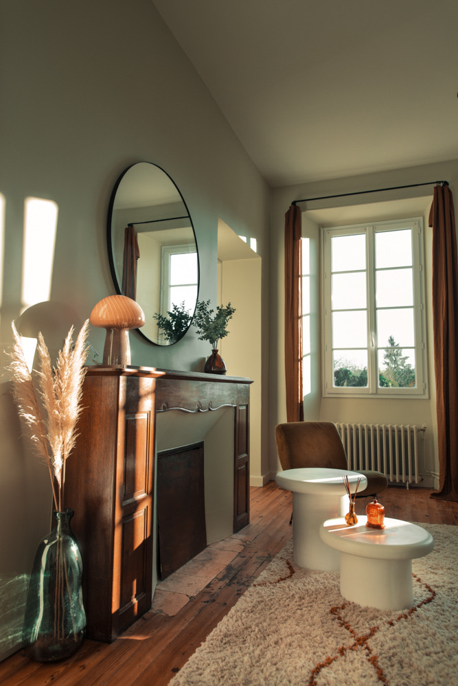
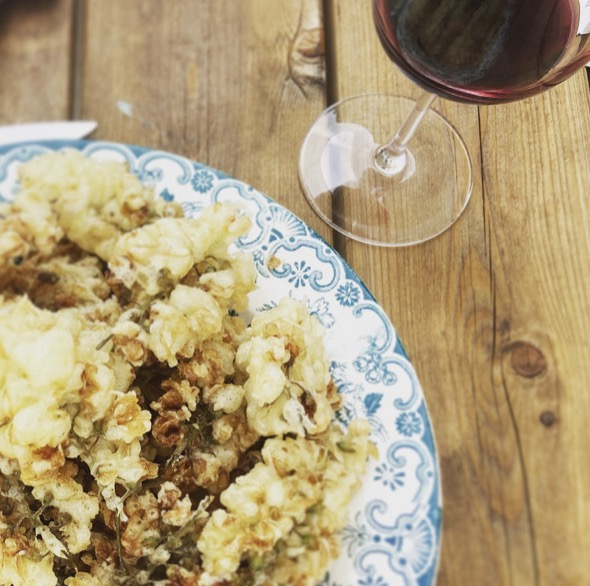
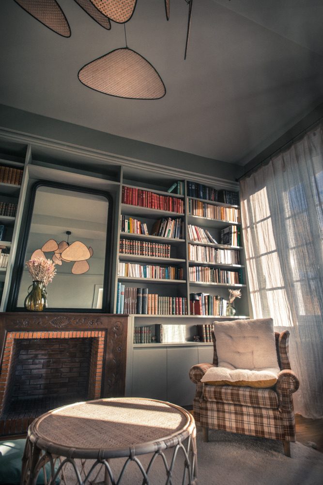
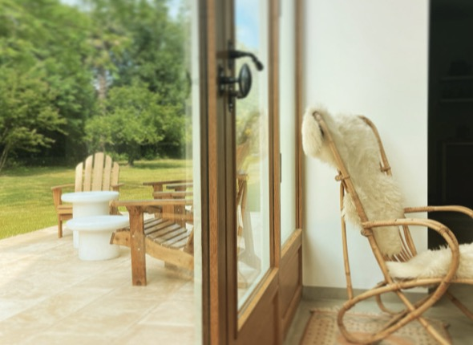
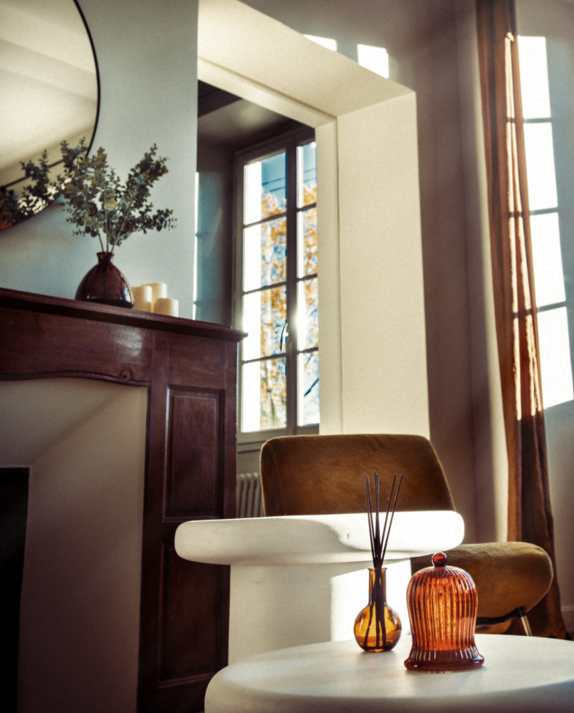
Ils sont venus
Des retraites avec Isabelle depuis 2020
On peut progresser à notre allure, sans pression de performance.
On a beaucoup aimé notre escapade de 4 jours avec Isabelle à la maison Welcome, située en pleine nature. Des sessions de Pilates, Yoga et Danse formidables, complètes, ludiques et dans la bonne humeur ! On a aussi apprécié les conférences sur le sucre, très instructives. Une escapade sportive, riche en rencontres, dans une super ambiance ! À refaire…
Une première pour moi et que de bonnes surprises. Isabelle sait s'adapter à tous les niveaux. De la bienveillance, des rires, de la détente, des promenades et aussi des courbatures ! Une belle retraite sportive, je recommande !
J'ai effectué 2 séjours Pilates et Yoga avec Isabelle. Ce fut une parenthèse de bien-être. Accompagnée par la bienveillance d'Isabelle, on peut progresser à notre allure, sans pression de performance. Juste être à l'écoute de son corps, de ses besoins, et c'est tellement nécessaire dans ce monde… J'ai hâte du prochain séjour.
Réserver votre place
Envoyez votre demande : Isabelle vous répond personnellement, sans engagement avant l'acompte.
Isabelle vous répond avec le RIB, les conditions d'annulation et les infos d'accès.
Le virement confirme votre place.
Par virement.
Avant de partir
L'adresse exacte et l'accès vous sont communiqués à l'inscription.
Une semaine, arrivée à partir de 15 h le premier jour. Voir toutes les dates
Le trajet jusqu'à la maison Yaya n'est pas compris dans le prix.
1 800 € par personne en chambre de deux, 1 450 € par personne en chambre de quatre, chaque chambre avec sa salle de bain privative. Le prix comprend l'hébergement, tous les repas, les pratiques avec Isabelle et les randonnées.
Non. Ils se réservent à l'avance auprès d'Isabelle, en supplément.
Un acompte de 30 % par virement confirme votre place, puis le solde est à verser un mois avant le début du séjour. Les conditions d'annulation vous sont envoyées avec la confirmation.
Non. Isabelle guide chaque participant à son rythme, que vous débutiez ou que vous pratiquiez déjà.
Non. La danse est un moment de légèreté et de spontanéité, pour bouger librement et sans jugement.
Oui. Le groupe fait partie de l'expérience : une connexion avec le vivant, son corps, la nature et le groupe.
Une approche qui explique comment notre système nerveux réagit au stress et à la sécurité. Isabelle la présente de manière simple et accessible, pour mieux connaître ses états intérieurs et trouver des ressources pour retrouver le calme.
Hâte de vous retrouver pour vivre des moments simples et riches en partages, convivialité et ressourcement.
À bientôt, Isabelle